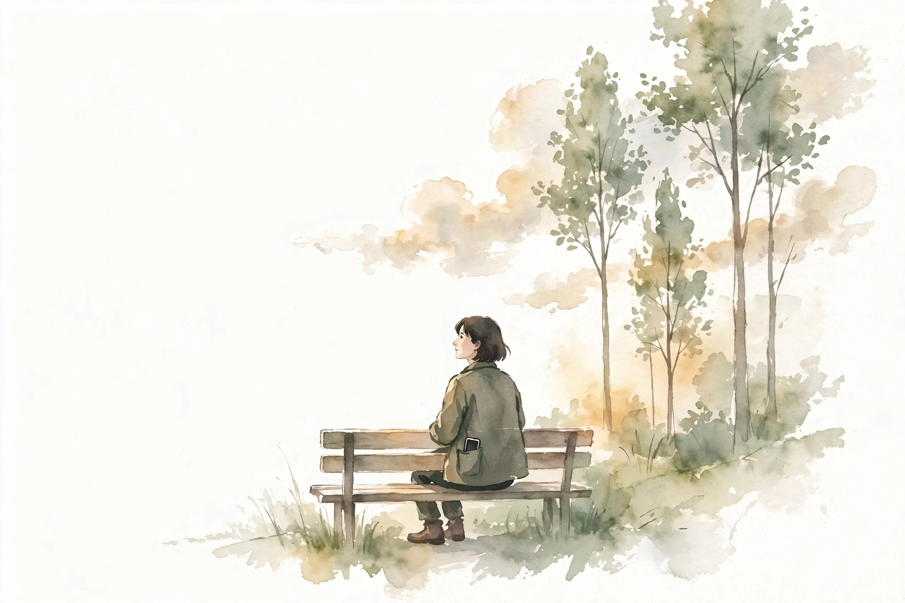
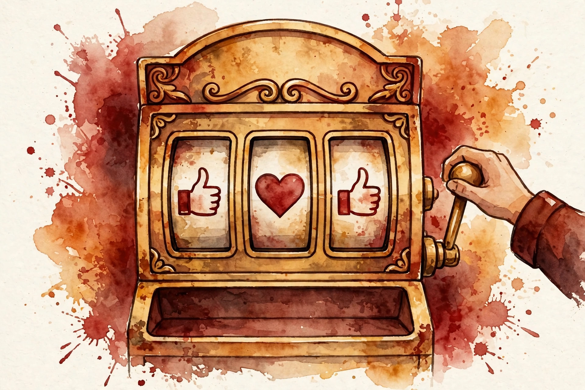

Deep Questions · Companion · 13 min
The Perks of Living Without Social Media
Four perks of life without social media, from the most-watched Deep Questions episode (1.19M views, highest of the ten episodes in this track): productive boredom, lower anxiety, real privacy, and a calibrated sense of importance.

Cal Newport. Photo: robertglazer.com (Elevate Podcast). Newport has never held a social media account.
Watch. The official episode video. Use the chapter menu above to jump to any section of this companion as you listen.
The Wisdom Index: every nugget in this companion
Part 1
The Never-Account
Cal Newport opens with the fact he is best known for. He has never had a social media account. No Facebook. No Twitter. No Instagram. No TikTok. No Snapchat.
As someone who writes about technology and its impact on culture, he calls this a real advantage. Distance from the culture he studies lets him observe it with clarity. He does not drown in the tools he writes about.
Then he widens the claim. Over the years he has become convinced that the perks of skipping social media apply to everyone, not only to tech writers. This episode lays out four of them: more boredom, lower anxiety, more privacy, and a lower sense of self-importance.
Nugget 1 · The audience test
The 30-day silent test
What happened. Source fact In Deep Work, Newport told active social media users to step away for 30 days and tell nobody. Readers wrote back that the test crushed them: no one noticed, no one asked, no one cared. The platforms had built an illusion of a vast waiting audience.
Why it matters. Interpretation Metrics manufacture a sense of importance that real life does not confirm. The pain of the test is the proof of the illusion.
The principle. Interpretation Measure your importance by who notices your absence, not by who taps an icon.
Part 2
Perk One: Productive Boredom
The first perk sounds like a paradox: more boredom. Follow the logic. With addictive apps on the phone, the phone becomes the default mode of distraction. At the slightest hint of boredom, the hand reaches for it and starts scrolling.
Newport does not blame the user for this. The apps were engineered by some of the smartest people in the world to be deeply compelling. Tens of billions of dollars of attention engineering stand ready to serve the perfect moment of distraction. Why sit in line and feel bored when all of that is in your pocket?
The cost is that boredom disappears from your life. The slightest hint of it sends you to the phone. Without the apps, the phone holds nothing interesting, so you sit alone with your own thoughts. That state has a name: solitude.
In solitude you fit your experiences into a framework for understanding them. You reflect on what goes well, what does not, what resonates, what worries you. You make progress on identity and self-definition. Newport puts it plainly: it is in time alone with our minds that we evolve as humans. Rob yourself of solitude and you miss that evolution.
Boredom has a second gift. It pushes you toward higher-quality leisure. With nothing to tap, an empty afternoon can drive you to read, to exercise, to pick up a hobby, to take a walk, to join a club. Boredom is a useful instinct. Hunger feels terrible because eating matters. Boredom feels bad because it pushes you toward productive activity. The phone short-circuits that push and leaves you staring at glowing glass.
boredom is a very useful instinct
Cal Newport · Deep Questions, The Perks of Living Without Social Media

Illustration. Solitude: an empty afternoon with nothing to tap. AI-generated watercolor made for this page.
Nugget 2 · The signal
Boredom is a signal, not a flaw
What happened. Source fact Newport compares boredom to hunger: a strong, disagreeable feeling that pushes humans toward something important. The phone interrupts that push by offering instant distraction.
Why it matters. Interpretation When you treat boredom as a defect and numb it, you lose the prompt that would move you toward better activity.
The principle. Interpretation Protect the signal. Let an empty moment stay empty long enough to tell you what it wants.
Nugget 3 · Identity work
Solitude builds the self
What happened. Source fact Newport argues that time alone with your thoughts is where experiences get fitted into a framework, where you reflect on what resonates and what worries you, and where identity and self-definition make progress.
Why it matters. Interpretation Reflection cannot be outsourced to a feed. A self is built in the quiet, not in the scroll.
The principle. Interpretation Schedule unscheduled time. The mind does its deepest work when nothing asks for it.
Where idle moments go
Source: Deep Questions, The Perks of Living Without Social Media, perk one. All labels are paraphrase of the episode argument.
Part 3
Perk Two: Lower Anxiety
The second perk rests on a simple rule: "your world is what you pay attention to." There is far more information in the world than any mind can take in. So the mind looks at what you consume and builds its picture of the world from it, emotional as well as physical.
Live inside a combative platform like Twitter and the picture turns grim. Newport paints it as a virtual town square where villains ride freely and the townspeople fire revolvers at them, bodies dropping from the metaphorical saloon window. It is a world of outrage, instant castigation, and criminals to root out. Not a happy world. His test: have you ever met a frequent Twitter user who was happy?
villains ride freely through the virtual town square
Cal Newport on the world Twitter builds in your mind · Deep Questions
Prefer Instagram and skip the politics? You get highly curated portrayals of other lives. Everyone is happy, in great shape, and doing more interesting things than you. That world breeds inferiority instead of outrage, but it is no kinder.
Step away from the feeds and the world you see becomes the one around you: friends, people in town, books, the radio, what you saw on your walk home. It is calibrated to the human mind. Calmer. Slower. Less anxious. More sustainable.
Nugget 4 · The input rule
Attention sets your world
What happened. Source fact Newport argues that the mind constructs its emotional picture of the world from whatever it pays attention to, and that social media feeds it a grim, unsettling, algorithmically optimized picture.
Why it matters. Interpretation Anxiety is downstream of inputs. Change the inputs and the felt world changes with them.
The principle. Interpretation Curate attention the way you curate food. You live inside whatever you consume.
Nugget 5 · The metaphor
The town-square world
What happened. Source fact Newport describes the Twitter-built world as a virtual town square of villains, revolvers, and outrage, and asks whether any frequent user of it seems happy.
Why it matters. Interpretation A vivid metaphor does diagnostic work: it makes an abstract harm feel concrete enough to act on.
The principle. Interpretation When a tool shapes your mood, name the world it builds. Naming is the first step out of it.
Part 4
Perk Three: Privacy
The third perk is privacy. Life on the platforms demands constant content. That content reveals more about you, over time, than you would ever choose to reveal.
Newport calls the result an unsettling position: an amorphous large crowd of people you mostly do not know holds a large file on you, and you do not even know how much they know. That asymmetry sits badly with human nature.
He grants the apparent paradox. He is a public figure. You may know him from video, from TV, from other podcasts. But that is a controlled environment: one video, worked on, released on purpose. Daily posting is the opposite: takes on everything, reactions to everything, back-and-forth arguments all day. That reveals too much.
Humans are wired for tight-knit communities, he argues. People who know you well through family and community bonds. They see you at your best and your worst. Trust runs both ways, and everyone will sacrifice for each other. That is the socialization we are built for. It is not 10,000 amorphous strangers studying your replies.
Nugget 6 · The wiring
Tight-knit beats amorphous
What happened. Source fact Newport contrasts controlled public work with the daily back-and-forth of posting, and contrasts tight-knit communities of mutual trust with an amorphous crowd of 10,000 strangers.
Why it matters. Interpretation The stress of posting is not vanity. It is a mismatch between the tool and the social brain.
The principle. Interpretation Share deeply with few. Share carefully with many. Never confuse an audience with a community.
Part 5
Perk Four: Calibrated Importance
The fourth perk targets one of the most insidious effects of the platforms: an inflated sense of self-importance. The little metrics do the inflating. Thumbs up. Hearts. Counts ticking upward beside every post.
Some of it is deliberate manipulation. TikTok, Newport notes, will sometimes show your video to a much larger audience than normal, just to hand you an intermittent burst of approval. The design keeps you "pulling that slot machine lever", hoping for the next burst.
The feeling it creates is that a vast audience cares deeply about what you say. That feeling entrenches. It pulls people toward strange ideas and conspiratorial thinking. It turns disagreement into tribal warfare. It places you at the center of an apocalyptic battle. None of this is good for the human psyche, and it arrives daily.

Illustration. The slot-machine lever: intermittent bursts of approval that keep you pulling. AI-generated watercolor made for this page.
The antidote is a calibrated sense of importance built from real things. The respect of a person you showed up for when they needed you. The respect of people who know your work and have read it. The respect of family, earned by sacrifice. Real importance pushes you to do things of real importance and to live a more sustainable, deeper life.
Nugget 7 · The mechanism
The slot-machine lever
What happened. Source fact Newport describes platforms handing out intermittent bursts of reach and approval, like a slot machine, to keep users pulling the lever for the next burst.
Why it matters. Interpretation Variable rewards are the oldest trick in behavioral design. Your ego is the product being farmed.
The principle. Interpretation If a number on a screen sets your mood, the number owns you. Take the measurement offline.
Nugget 8 · The calibration
Importance you can calibrate
What happened. Source fact Newport argues for earning a sense of importance from real acts with real people: being there for someone, work that others respect, family you serve.
Why it matters. Interpretation Calibrated importance is stable because it is witnessed by people who know you, not counted by systems that use you.
The principle. Interpretation Let flesh-and-blood humans set your status. Their verdicts are slower, fairer, and harder to fake.
The 30-day silent test
Source: the 30-day test from Deep Work, recounted in this episode. Timeline labels are paraphrase.
Part 6
The Recap
Newport closes by restating the four perks. You will be bored more often, and that boredom will lead to good things. Your anxiety will fall, because the world your mind builds comes from what you pay attention to. You will keep more of yourself private, which matches how humans are wired. And your sense of self-importance will shrink to its true size, which pushes you to earn it in real ways.
His final pitch is direct. If you are not happy with what social media does to your life, step away. The benefits of leaving may be much bigger than you first guess.
The episode in seven lines
- You do not need social media to matter. Measure importance by who notices your absence.
- Boredom is a signal, not a flaw. Protect it and it pushes you toward better leisure.
- Solitude is where experience turns into identity. The phone steals it one glance at a time.
- Your world is what you pay attention to. Curate inputs the way you curate food.
- Humans are wired for tight-knit trust, not for 10,000 strangers watching.
- Metrics inflate the ego. Earn importance from real things with real people.
- If social media makes you unhappy, the gains from leaving may exceed your first guess.
Distilled from Deep Questions, The Perks of Living Without Social Media (May 2022, 13:18). Video: youtube.com/watch?v=m6AF_aFuD8w.